前面讨论用户登录认证的时候，根据用户名查询用户会将用户拥有的角色一起查询出来，自动实现判断当前登录用户拥有哪些角色。可以说用户与角色之间的动态配置和判断security做的非常不错。不过在配置方法级别的权限的时候，使用注解虽然是一种比较优雅的方式，但是要求在开发的时候就知道当前url对应哪些角色，无法实现动态的配置，而实际的项目中，每个链接允许哪些角色访问也不是一成不变的，因此下面我们来实现自己的路由判断。
前面的讨论中，我们创建了用户表，角色表和用户角色中间表，下面来创建菜单功能表，并把现在有的url链接添加进去：
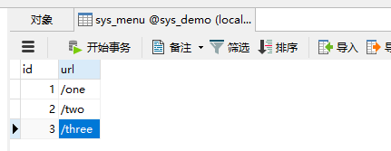
然后创建角色菜单中间表，加入角色与url之间的对应关系：
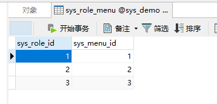
首先去掉前面的方法级别权限的注解，然后创建菜单实体类：
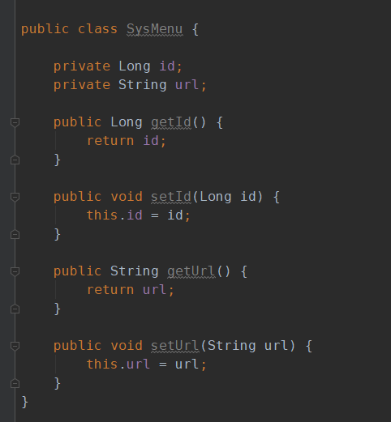
创建查询方法，根据url查询次链接对应的所有角色名称：
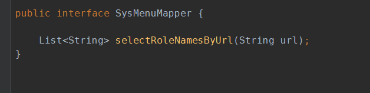
对应的sql语句如下：
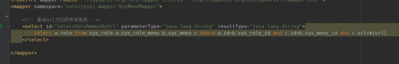
首先增加一个处理类，在收到访问的时候，动态获取当前url的角色：
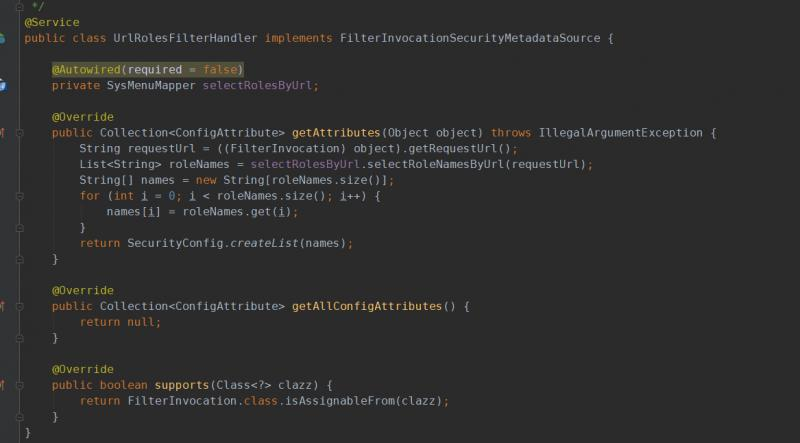
新建一个ObjectPostProcessor类，将这个处理类配置到其中：
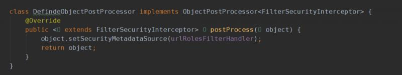
最后将新建的ObjectPostProcessor类配置到权限配置方法中：
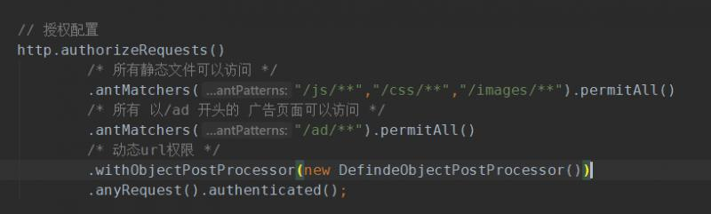
用户与角色是多对多的关系，url与角色也是多对多的关系，这里的设定是，只要用户与url对应的角色中有相同的存在，就表示用户有访问的权限。首先看一下对应判断的处理类：
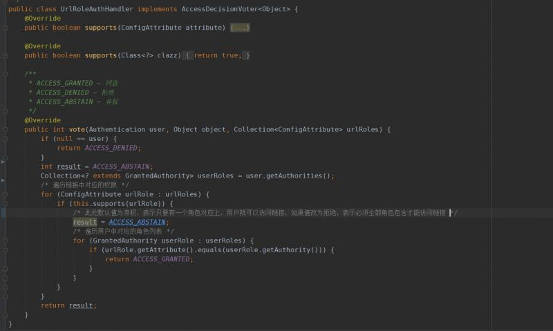
使用双重for循环进行判断，并进行结果投票。在注释中可以看到，使用不同的方式会产生不同的策略。下一步在security配置类中配置路由策略方法：
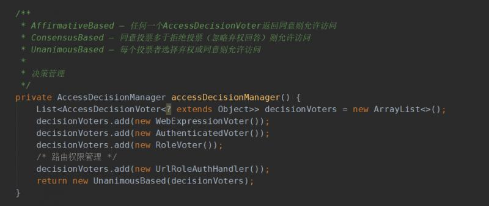
除了UrlRoleAuthHandler类，其它决策类使用的都是security存在的类，最后在权限配置中配置决策管理：
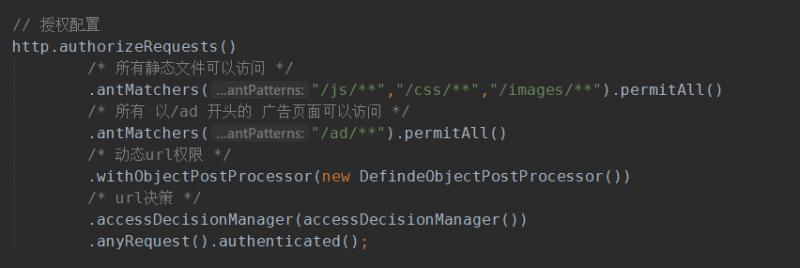
这样动态权限url就配置好了，根据上面方法中的数据，可以登录查看是否具有对应的url权限，没有配置的是否不具备权限。